فصل اول: مبانی برنامه نویسی
مقدمه
برنامه نویسی چیست و چرا باید آن را یاد گرفت؟
برنامهنویسی اساساً راهی برای برقراری ارتباط با کامپیوترها است. فرآیند نوشتن دستورالعملهای دقیقی است که کامپیوترها می توانند درک و اجرا کنند. آن را بهعنوان آموزش وظایف به یک ربات در نظر بگیرید، اما بهجای دادن دستورات به زبان انسانی، از کد استفاده میکنیم.
چرا یادگیری کدنویسی؟
یادگیری کدنویسی دنیایی از امکانات را باز می کند. در اینجا فقط چند دلیل وجود دارد که چرا برنامهنویسی یک مهارت ارزشمند است:
- حل مسئله: برنامه نویسی به شما می آموزد که منطقی فکر کنید و مشکلات را به صورت خلاقانه حل کنید.
- فرصت های شغلی: با توجه به اینکه همه چیز در حال حرکت آنلاین است، مهارت های برنامهنویسی در بسیاری از صنایع مورد تقاضا هستند.
- ایده ها را زنده کنید: برنامه نویسی به شما امکان می دهد وب سایت ها، برنامه ها، بازی ها و موارد دیگر خود را بسازید.
- دنیای دیجیتال را درک کنید: به شما کمک می کند نحوه عملکرد نرم افزار و وب سایت هایی که هر روز از آنها استفاده می کنید را درک کنید.
مفاهیم برنامه نویسی
بیایید یک مثال ساده ریم در نظر بگیریم تا قدرت برنامه نویسی را نشان دهیم. به ایجاد یک ماشین حساب بودجه شخصی فکر کنید. به جای محاسبه دستی هزینه ها و پس انداز خود در هر ماه، می توانید برنامه ای بنویسید که این کار را برای شما انجام دهد. درآمد و هزینه های ماهانه خود را وارد میکنید و برنامه پس انداز شما را محاسبه می کند. این یک مثال اساسی از خودکار کردن یک کار از طریق برنامه نویسی است.
در اینجا چند مفهوم پایهای وجود دارد که میتوانند در شروع به شما کمک کنند:
-
متغیرها / Variables:
یک متغیر در برنامه نویسی شبیه به جعبه ای در دنیای واقعی کار می کند که می توانید چیزی را در آن قرار دهید. در این حالت، شما اشیاء فیزیکی را در آن قرار نمی دهید، بلکه اطلاعات یا داده ها را در آن قرار می دهید. در برنامه نویسی به فرآیند «قرار دادن چیزی» می گویند.
برای اینکه بتوانید به این کادر (متغیر) ارجاع دهید، نامی به آن می دهید. این نام به شما کمک می کند بعدا به راحتی به اطلاعات ذخیره شده در آن دسترسی داشته باشید. به عنوان مثال، اگر متغیری به نام سن دارید، مانند این است که یک جعبه با برچسب "سن" دارید که می توانید سن یک فرد را در آن ذخیره کنید.
مثال:
تصور کنید می خواهید سن یک فرد را در برنامه خود ذخیره کنید. ابتدا یک متغیر ایجاد میکنید و نامی برای آن میگذارید که آنچه را که ذخیره میکند، به عنوان مثال سن، توصیف میکند. سپس به این متغیر یک مقدار اختصاص میدهید، مثلاً 30. در بسیاری از زبانهای برنامهنویسی به این صورت است:
age = 30;
در این مثال:
age نام متغیر است مانند برچسب روی جعبه ما. - = عملگر( Operator) انتساب است که برای تخصیص یک مقدار به متغیر استفاده می شود مانند قرار دادن یک آیتم در کادر.
30 مقداری ( Value) است که به متغیر اختصاص می دهیم مانند موردی که در کادر قرار داده ایم.
بعد از اینکه یک مقدار را به یک متغیر اختصاص دادید، می توانید آن مقدار را بعداً با استفاده از نام متغیر در برنامه بازیابی کنید. بنابراین اگر بعداً می خواهید بررسی کنید که آیا فرد بالای 18 سال دارد، می توانید از شرایطی استفاده کنید که به این صورت است:استفاده از متغیرها برنامه شما را انعطاف پذیر و قابل استفاده مجدد می کند زیرا می توانید به راحتی مقادیری را که متغیرها نگه می دارند بدون نیاز به تغییر همه کدها تغییر دهید. می توانید تصور کنید که استفاده از متغیرها مانند نگه داشتن جعبه هایی است که می توانید محتویات آنها را در هر زمان بدون نیاز به تغییر برچسب روی جعبه (نام متغیر) تعویض کنید.
در برنامه ها می توانید با مقادیر موجود در متغیرها محاسبه کنید، آنها را مقایسه کنید، از آنها در شرایط / Conditions استفاده کنید و موارد دیگر. متغیرها برای ایجاد انعطاف پذیری و پویایی برنامه ها بسیار مفید هستند. شما می توانید مقدار یک متغیر را در طول زمان اجرای برنامه خود تغییر دهید، به این معنی که رفتار برنامه شما می تواند مطابق با آن سازگار شود. - انواع داده (Data):
- اعداد صحیح (Integer, Int):
- اعداد بدون اعشار هستند. آنها میتوانند مثبت یا منفی باشند.
- مثال:
42،-7
- اعداد ممیز شناور (Float):
- اعدادی هستند که اعشار دارند. آنها برای مقادیر دقیق تر استفاده میشوند.
- مثال:
3.14،-0.001
- رشتههای کاراکتر (Strings):
- دنبالهای از کاراکترها هستند که متن را نشان میدهند.
- مثال: "
سلام جهان"، "1234"
- ارزشهای حقیقت (بولیان Boolean):
- مقادیر حقیقت را نشان میدهند و فقط میتوانند دو مقدار بگیرند: true یا false.
- مثال: "
درست"، "نادرست"
- فهرست Arrays:
- مجموعههای مرتب شدهای از عناصر هستند که میتوانند انواع مختلفی از دادهها را در بر گیرند.
- مثال: "
[1، 2، 3]"، "["سیب"، "موز"، "گیلاس"]"
- تاپل ها (Tuple):
- شبیه به لیست ها هستند، اما تغییر ناپذیرند.
- مثال: "
(1، "سلام"، درست است)"
- فرهنگ لغت (Dictionaries):
- جفت کلیدها و مقادیر را ذخیره میکنند.
- مثال: "
{"name": "Emma"، "age": 30}"
- تعداد (مجموعه Set):
- مجموعههایی از عناصر منحصر به فرد بدون ترتیب خاصی هستند.
- مثال: "
{1، 2، 3، 4}"
- اعداد صحیح (Integer, Int):
- عملگرها (Operators):
- این نمادها به رایانه میگویند که چگونه با دادهها تعامل داشته باشد:
- حسابگری: (+، -، *، /) برای محاسبات.
- مقایسه: (==، !=، >، <) برای مقایسه مقادیر.
- منطقی: ( و and، یا or، نه not) برای ترکیب شرایط.
- . شرطها (Conditional Statements (If-Else:
- ساختار پایه دستورالعمل "if":
- شرط ارزیابی میشود و اگر true باشد، دستورات داخل بلاک اجرا میشوند. اگر شرط false باشد، بلاک نادیده گرفته میشود.
- دستورالعمل های "if" پیشرفته:
- برای تصمیمگیریهای پیچیدهتر، میتوان "if" را با "else" و "else if" گسترش داد که چندین شرط و اقدامات مربوطه را امکان پذیر میکند.
- مثال:
if (دما > 25) { لباس = "تی شرت"; } else if (دما >= 15 && دما <= 25) { لباس = "پیراهن"; } else { لباس = "ژاکت"; }
- عملگرهای منطقی:
- برای بیان شرایط پیچیدهتر، میتوانید از عملگرهای منطقی مانند && (و)، || (یا) و ! (نه) برای ترکیب چندین شرط استفاده کنید.
- مثال:
if (دما > 20 && آفتابی) { روز = "perfect برای ساحل"; }
- ساختار پایه دستورالعمل "if":
-
5. حلقهها (Loops):
اگر میخواهید برنامه شما بارها و بارها کاری را انجام دهد، مثلاً گذر از لیستی از کارها، میتوانید از حلقهها استفاده کنید. یک حلقه به کامپیوتر میگوید که یک بلوک از دستورالعملها را تا زمانی که یک شرط خاص برآورده شود، تکرار کند. حلقهها در برنامهنویسی برای مدیریت کارهای تکراری به طور کارآمد ضروری هستند. انواع مختلفی از حلقهها در اکثر زبانهای برنامهنویسی موجود هستند و هر کدام کاربردهای خاص خود را دارند. بیایید مفاهیم پایه و چند مثال را بررسی کنیم:
-
حلقههای For:
یک حلقه For زمانی استفاده میشود که دقیقاً میدانید چند بار باید یک بلوک از دستورات اجرا شود. این حلقه برای پیمایش در لیستها (آرایهها) یا سایر مجموعهها بسیار مفید است.
-
مثال عملی:
فرض کنید میخواهید اعداد 1 تا 5 را روی صفحه نمایش دهید:
این مثال، متغیر i از 1 شروع میشود و تا زمانی که i کوچکتر یا مساوی 5 باشد، حلقه اجرا میشود. بعد از هر بار اجرا، i به اندازه 1 افزایش مییابد.
-
مثال عملی:
-
حلقههای While:
-
مثال عملی:
یک حلقه While تا زمانی که یک شرط برقرار باشد، دستورات را اجرا میکند. این حلقه زمانی ایدهآل است که تعداد دفعات اجرا از قبل مشخص نیست.
مثال عملی:
فرض کنید یک شمارنده دارید که تا زمانی که یک عدد تصادفی بزرگتر از 0.8 باشد، افزایش مییابد:
-
مثال عملی:
-
حلقههای Do-While:
-
مثال عملی:
حلقه Do-While شبیه به حلقه While است، با این تفاوت که دستورات حداقل یک بار قبل از بررسی شرط اجرا میشوند.
مثال عملی:
فرض کنید میخواهید یک پیام را حداقل یک بار نمایش دهید و سپس تا زمانی که کاربر میخواهد، آن را نمایش دهید:
حلقهها ابزاری قدرتمند در برنامهنویسی برای جلوگیری از تکرار کد و کنترل اجرای دستورات بر اساس شرایط هستند. انتخاب بین حلقههای For، While و Do-While به موقعیت خاص و نوع شرطی که تکرار باید تحت آن انجام شود بستگی دارد
-
مثال عملی:
-
حلقههای For:
-
توابع (Functions):
- یک تابع (Function) مجموعهای از انجام دستورالعملها است که برای دادن یک کار خاص جمعآوری شدهاند. میتوان یک تابع را مثل یک برنامه کوچک درون برنامهای خود تصور کرد. اگر بخواهید یک کار را چند بار انجام دهید، میتوانید یک تابع بنویس و هر زمانی که نیاز دارید، آن را فراخوانی کنید.
- توابع یک مفهوم اساسی در برنامهنویسی هستند که برای ساختار و استفاده مجدد از کد ضروری هستند. آنها به شما امکان میدهند برنامههای پیچیده را به بخشهای کوچکتر و قابلکنترل تقسیم کنید. یک تابع را میتوان به عنوان یک "مینی برنامه" مستقل در نظر گرفت که یک کار خاص را انجام میدهد.
-
تعریف تابع:
- نام: نامی که به تابع خود میدهید. باید وظیفه تابع را منعکس کند.
- پارامترها: متغیرهایی که هنگام فراخوانی تابع مقادیر دریافت میکنند. آنها به تابع اجازه میدهند تا با ورودیهای مختلف کار کند.
- دستورات: کدی که وظیفه واقعی تابع را انجام میدهد.
- Return: کلمه کلیدی که برای بازگرداندن یک مقدار از تابع استفاده میشود. این اختیاری است و به وظیفه تابع بستگی دارد.
- فراخوانی تابع: پس از تعریف یک تابع، میتوان آن را با ذکر نام آن و ارسال مقادیر پارامترهای مورد نیاز فراخوانی کرد.
-
مزایای توابع:
- استفاده مجدد از کد: توابع به شما این امکان را میدهند که یک بلوک کد را بنویسید که میتوان چندین بار بدون نیاز به نوشتن مجدد آن اجرا کرد.
- مدولار بودن: توابع به شما کمک میکنند تا برنامه خود را به بخشهای کوچکتر و قابلمدیریتتر تقسیم کنید.
- قابلیت نگهداری: برنامه هایی که از توابع با ساختار مناسب استفاده می کنند، درک، آزمایش و نگهداری آسان تر هستند.
کامپایل کردن یعنی چی؟
کامپایل یک فرآیند اساسی در توسعه نرم افزار است که کد نوشته شده در یک زبان برنامه نویسی سطح بالا (کد منبع) را به کد ماشین (کد باینری) تبدیل می کند که پردازنده کامپیوتر می تواند مستقیماً آن را اجرا کند. ابزار مسئول این تبدیل کامپایلر نامیده می شود.
در اینجا خلاصه ای از آنچه کامپایل شامل می شود آورده شده است:
-
تجزیه و تحلیل واژگانی - Lexical Analysis: کامپایلر کد منبع را می خواند و آن را به عناصر معنی دار به نام نشانه ها تقسیم می کند. این نشانه ها می توانند کلمات کلیدی، نمادها، عملگرها، شناسه ها و غیره باشند.
-
تجزیه و تحلیل نحو (تجزیه) - (Syntax Analysis (Parsing: در این مرحله، کامپایلر نشانه ها را در برابر قوانین نحوی زبان برنامه نویسی بررسی می کند تا یک نمایش درخت مانند از ساختار کد منبع ایجاد کند. این درخت به درخت نحو انتزاعی (AST) معروف است.
-
تجزیه و تحلیل معنایی - Semantic Analysis: کامپایلر AST را برای سازگاری معنایی تأیید می کند، و اطمینان حاصل می کند که کد منبع به قوانین معنایی زبان پایبند است. این شامل بررسی نوع، وضوح محدوده، و شناسایی استفاده از متغیرهای اعلام نشده است.
-
بهینه سازی - Optimization: کامپایلر ممکن است بهینه سازی های مختلفی را برای افزایش کارایی کد ماشین حاصل انجام دهد. این می تواند شامل حذف کد اضافی، به حداقل رساندن استفاده از حافظه و بهینه سازی مسیرهای اجرا باشد.
-
تولید کد - Code Generation: کامپایلر AST بهینه شده را به کد ماشین مخصوص معماری پردازنده هدف تبدیل می کند. این کد ماشین همان چیزی است که کامپیوتر می تواند اجرا کند.
-
پیوند - Linking: در بسیاری از موارد، به ویژه برای برنامه های پیچیده، کامپایلر نیاز دارد تا کدهای ماشین را از فایل های منبع و کتابخانه های مختلف به یکدیگر پیوند دهد. این مرحله مراجع خارجی را حل می کند و یک فایل اجرایی یا باینری نهایی تولید می کند.
نمونهای از کامپایل
یک برنامه ساده را در نظر بگیرید که به زبان C نوشته شده است:
وقتی این برنامه را با استفاده از یک کامپایلر C کامپایل میکنید (مانند gcc برای مجموعه کامپایلر گنو)، کامپایلر مراحل ذکر شده در بالا را طی میکند تا این کد C سطح بالا را به کد ماشینی تبدیل کند که رایانه میتواند اجرا کند. دستور کامپایل این برنامه ممکن است به صورت زیر باشد:
این به gcc می گوید که فایل منبع hello.c را بگیرد، آن را کامپایل کند و یک فایل اجرایی به نام hello را خروجی دهد. اجرای ./hello در ترمینال، کد دستگاه را اجرا می کند و "Hello, world!" به کنسول
کامپایل بسیار مهم است زیرا:
-
کدهای قابل خواندن توسط انسان را به شکلی ترجمه می کند که ماشین ها بتوانند آن را درک و اجرا کنند.
-
کد را برای عملکرد بهینه می کند و از منابع کامپیوتر استفاده بهینه می کند.
-
بررسی خطا در مراحل اولیه، گرفتن نحو و برخی از خطاهای معنایی را قبل از اجرای برنامه فعال می کند.
-
با اجازه دادن به یک کد سطح بالا برای کامپایل شدن کدهای سطح بالا برای معماری های مختلف، با کامپایلر که مشخصات هر معماری هدف را مدیریت می کند، قابلیت حمل را تسهیل می کند.
به طور خلاصه، کامپایل یک مرحله حیاتی در فرآیند توسعه نرم افزار است، که شکاف بین منطق انسانی بیان شده در کد منبع و دستورالعمل های باینری را که سخت افزار رایانه می تواند اجرا کند، پر می کند.
درک کامپیوترها و کد
تا پایان این کتاب، درک خوبی از این زبانها به دست خواهید آورد و میتوانید پروژههای وب تعاملی و پویا خود را ایجاد کنید. سفر ما از اصول اولیه شروع می شود و به تدریج به سمت مفاهیم پیچیدهتر حرکت میکند. هیچ تجربه قبلی لازم نیست—فقط تمایل به یادگیری.
شروع این سفر نه تنها شما را به مهارتهای ارزشمندی مجهز میکند، بلکه قلمرو جدیدی از خلاقیت و حل مسئله را نیز باز میکند. چه هدف شما دنبال کردن حرفهای در فناوری باشد یا صرفاً بخواهید نحوه ایجاد محصولات دیجیتال را کشف کنید، برنامهنویسی مسیری ارزشمند را ارائه میدهد.
به یاد داشته باشید، هر برنامهنویس ماهری روزی یک مبتدی بوده است. سفر شما از هم اکنون آغاز میشود و من اینجا هستم تا در هر مرحله شما را راهنمایی کنم.
راهاندازی جعبه ابزار
اکنون که مبانی برنامه نویسی و اهمیت آن را به عنوان یک مهارت ارزشمند برای یادگیری پوشش دادهایم، زمان آن رسیده است که ابزارهایی را که برای شروع ساخت پروژههای خود نیاز دارید راهاندازی کنید. در این فصل، ما شما را در انتخاب یک ویرایشگر کد، درک مرورگرهای وب و راه اندازی یک محیط توسعه محلی در یک سرور لینوکس اوبونتو با Nginx و وردپرس راهنمایی خواهیم کرد.
انتخاب یک ویرایشگر متن یا ویرایشگر کد
قبل از اینکه بتوانید شروع به نوشتن کد کنید، به یک ویرایشگر متن نیاز دارید- جایی که بیشتر وقت خود را به عنوان یک توسعهدهنده در آن میگذرانید. در اینجا چند گزینهی محبوب وجود دارد:
-
Visual Studio Code (VS Code): رایگان، متنباز، و در دسترس برای لینوکس، ویندوز، و macOS. VS Code بسیار قابل سفارشیسازی است و دارای یک کتابخانه بزرگ از افزونهها برای پشتیبانی از زبانها و ابزارهای برنامهنویسی مختلف است.
-
Sublime Text: این برنامه به دلیل سرعت و کارایی خود شهرت دارد، رابط کاربری براق و ویژگیهای قدرتمندی را ارائه می دهد. دانلود و ارزیابی آن رایگان است، اما برای استفاده مداوم به مجوز نیاز دارد.
-
Atom: یک ویرایشگر رایگان و متنباز که توسط GitHub ایجاد شده، که پشتیبانی عالی برای همکاری و کنترل نسخه ارائه میکند.
هنگام انتخاب یک ویرایشگر متن، اولویتهای شخصی خود از جمله سهولت استفاده، افزونهها یا پلاگینهای موجود، و پشتیبانی از زبانهایی که استفاده میکنید را در نظر بگیرید.
مرورگرهای وب و نقش آنها
مرورگرهای وب پنجره شما به اینترنت هستند و نقش مهمی در توسعه وب ایفا میکنند. آنها کدهای HTML، CSS، و JavaScript را برای نمایش صفحات وب تفسیر میکنند. مرورگرها برای توسعهدهندگان همچنین ابزارهایی (اغلب «ابزارهای توسعهدهنده» یا «DevTools» نامیده میشوند) را برای تست و اشکالزدایی پروژههای وب ارائه میدهند.
-
Google Chrome: به طور گسترده استفاده میشود، با DevTools قوی برای اشکالزدایی و آزمایش برنامههای وب.
-
Mozilla Firefox: ابزارهای جامعی را برای توسعهدهندگان ارائه میدهد، از جمله ویژگیهای منحصر به فردی که در سایر مرورگرها یافت نمیشوند.
-
Safari: برای آزمایش وبسایتها در دستگاههای اپل با مجموعهای از DevTools های خودش، ترجیح داده میشود.
این یک تصمیم عالی است! HTML (HyperText Markup Language) پایه و اساس وب و اولین قدم به سوی دنیای توسعه وب است. HTML به شما امکان میدهد ساختار و محتوای صفحات وب را تعریف کنید. بیایید با چند اصل شروع کنیم:
فصل دوم
Hyper Text Markup Language
HTML (زبان نشانهگذاری ابرمتن) پایه و اساس هر وب سایتی است. این یک زبان نشانهگذاری است که برای تعریف ساختار و محتوای یک صفحه وب استفاده میشود. با HTML میتوانید متن را قالببندی کنید، تصاویر و ویدیوها را درج کنید، لینکها را ایجاد کنید و کارهای بسیار بیشتری انجام دهید. هر سند HTML با یک تگ <html> شروع میشود و با یک تگ </html> به پایان میرسد. محتوای وب سایت در داخل این تگ ها قرار میگیرد و به عناصر مختلف تقسیم میشود.
ساختار اصلی یک سند HTML
یک سند HTML ساده از چند عنصر اساسی تشکیل شده است که ساختار صفحه را مشخص میکند. به عنوان مثال:
<!DOCTYPE html>: نوع سند و نسخه HTML (در این مورد HTML5) را اعلام میکند.<html>: عنصر ریشهای که کل سند HTML را در بر میگیرد.<head>: حاوی ابرداده و پیوندهایی به منابع خارجی مانند فایلهای CSS است. آنچه در<head>است معمولاً مستقیماً در وبسایت نمایش داده نمیشود.<meta charset="utf-8">: این عنصر مجموعه نویسههایی را که سند شما باید استفاده کند را روی UTF-8 تنظیم میکند.<meta name="viewport" content="width=device-width">: این عنصر viewport تضمین میکند که صفحه در عرض درگاه نمایش رندر میشود، و از باز کردن صفحهها توسط مرورگرهای تلفن همراه و سپس کوچک کردن آنها جلوگیری میکند.<title>: عنوان صفحه وب را که در نوار عنوان مرورگر نمایش داده میشود را مشخص میکند.<body></body>: عنصر<body>. این شامل تمام محتوایی است که میخواهید هنگام بازدید از صفحه شما به کاربران وب نشان دهید، خواه متن، عکس، ویدیو، بازی، آهنگهای صوتی قابل پخش یا هر چیز دیگری.
HTML Element
یک عنصر HTML از یک تگ شروع، محتوا و یک تگ پایان تشکیل شده است. تگ شروع و تگ پایان نام یکسانی دارند، با این تفاوت که تگ پایان یک اسلش قبل از نام دارد.

بخشهای اصلی عنصر به شرح زیر است:
- تگ باز / opening tag: این شامل نام عنصر (در این مورد p) است که در براکت های زاویه باز و بسته پیچیده شده است. این نشان می دهد که عنصر از کجا شروع می شود یا شروع به اثر می کند - در این مورد که پاراگراف شروع می شود.
- تگ بسته شدن / closing tag: این تگ همانند تگ افتتاحیه است، با این تفاوت که قبل از نام عنصر دارای یک اسلش رو به جلو است. این نشان می دهد که عنصر به کجا ختم می شود - در این مورد جایی که پاراگراف به پایان می رسد. عدم اضافه کردن برچسب بسته شدن یکی از خطاهای استاندارد مبتدی است و می تواند به نتایج عجیبی منجر شود.
- محتوا / content: این محتوای عنصر است که در این مورد فقط متن است.
- عنصر / element: تگ افتتاحیه، تگ بسته شدن و محتوا با هم عنصر را تشکیل می دهند.
عناصر همچنین می توانند ویژگی هایی داشته باشند که به شکل زیر هستند:
- ویژگی ها حاوی اطلاعات اضافی درباره عنصری هستند که نمی خواهید در محتوای واقعی ظاهر شوند. در اینجا، class نام ویژگی و "editor-note" مقدار ویژگی است. ویژگی class به شما امکان می دهد به عنصر یک شناسه غیر منحصر به فرد بدهید که می تواند برای هدف قرار دادن آن (و هر عنصر دیگر با مقدار کلاس مشابه) با اطلاعات سبک و چیزهای دیگر استفاده شود. برخی از ویژگی ها هیچ ارزشی ندارند، مانند مورد نیاز.
- ویژگی هایی که یک مقدار را تعیین میکنند همیشه دارای:
- فاصله بین آن و نام عنصر (یا ویژگی قبلی، اگر عنصر قبلاً یک یا چند ویژگی داشته باشد).
- نام مشخصه که با علامت مساوی همراه است.
- مقدار مشخصه با علامت نقل قول باز و بسته می شود.
عناصر تودرتو / Nesting elements
شما می توانید عناصر را درون عناصر دیگر نیز قرار دهید - به این حالت تودرتو می گویند. اگر بخواهیم بگوییم که گربه ما بسیار بداخلاق است، میتوانیم کلمه "بسیار" را در یک عنصر بپیچیم، به این معنی که این کلمه باید به شدت تاکید شود:
با این حال، باید مطمئن شوید که عناصر شما به درستی تو در تو قرار گرفته اند. در مثال بالا ابتدا عنصر و سپس عنصر را باز کردیم. بنابراین، ابتدا باید عنصر و سپس عنصر را ببندیم. موارد زیر نادرست است: عناصر باید به درستی باز و بسته شوند تا به وضوح در داخل یا خارج یکدیگر قرار گیرند. اگر همانطور که در بالا نشان داده شده با هم همپوشانی داشته باشند، مرورگر وب شما سعی می کند بهترین حدس را در مورد آنچه می خواستید بگویید، انجام دهد، که می تواند منجر به نتایج غیرمنتظره شود. پس این کار را نکنید!
عناصر خالی / Void elements
برخی از عناصر محتوایی ندارند و عناصر خالی نامیده می شوند. عنصر <img> را که قبلاً در صفحه HTML خود داریم، در نظر بگیرید:
این شامل دو ویژگی است، اما هیچ برچسب </img> بسته و محتوای داخلی وجود ندارد. این به این دلیل است که یک عنصر تصویر محتوا را نمیپوشاند تا بر آن تأثیر بگذارد. هدف آن قرار دادن یک تصویر در صفحه HTML در مکانی است که ظاهر می شود.
برخی از عناصر اولیه
تصاویر / Images
همانطور که قبلاً گفتیم، یک تصویر را در صفحه ما در موقعیتی که ظاهر می شود تعبیه می کند. این کار را از طریق ویژگی src (source) انجام می دهد که حاوی مسیر فایل تصویری ما است.
ما همچنین یک ویژگی alt (جایگزین) قرار داده ایم. در ویژگی alt، متن توصیفی را برای کاربرانی که نمی توانند تصویر را ببینند، مشخص می کنید، احتمالاً به دلایل زیر:
- آنها دچار اختلال بینایی هستند. کاربرانی که دارای اختلالات بینایی قابل توجهی هستند اغلب از ابزارهایی به نام صفحه خوان برای خواندن متن جایگزین برای آنها استفاده می کنند.
- مشکلی رخ داده است که باعث شده تصویر نمایش داده نشود. به عنوان مثال، سعی کنید عمدا مسیر داخل ویژگی
srcخود را تغییر دهید تا آن را نادرست کنید. اگر صفحه را ذخیره کرده و مجدداً بارگذاری کنید، باید چیزی شبیه به این را به جای تصویر ببینید:
کلمات کلیدی متن جایگزین "descriptive text" هستند. متن جایگزینی که می نویسید باید اطلاعات کافی را در اختیار خواننده قرار دهد تا ایده خوبی از آنچه که تصویر منتقل می کند داشته باشد. در این مثال، متن فعلی ما "My test image" اصلا خوب نیست. یک جایگزین بسیار بهتر برای لوگوی فایرفاکس ما "آرم فایرفاکس: روباهی شعله ور زمین را احاطه کرده است."
سرفصل ها / Heading
عناصر عنوان به شما این امکان را می دهند که مشخص کنید که قسمت های خاصی از محتوای شما عنوان یا عنوان فرعی باشد. همانطور که یک کتاب دارای عنوان اصلی، عنوان فصل و زیرنویس است، یک سند HTML نیز می تواند. HTML شامل 6 سطح عنوان، <h1> - <h6> است، اگرچه معمولاً حداکثر از 3 تا 4 استفاده می کنید:
توجه: هر چیزی که در HTML بین <!-- و --> باشد یک Comment HTML است. مرورگر توضیحات را در هنگام ارائه کد نادیده می گیرد. به عبارت دیگر، آنها در صفحه قابل مشاهده نیستند - تنها در کد. توضیحات HTML راهی برای نوشتن یادداشت های مفید در مورد کد یا منطق خود است.
اکنون سعی کنید یک عنوان مناسب به صفحه HTML خود درست بالای عنصر <img> خود اضافه کنید.
توجه: خواهید دید که عنوان سطح 1 شما دارای سبک ضمنی است. از عناصر عنوان برای بزرگتر یا پررنگتر کردن متن استفاده نکنید، زیرا برای دسترسی و دلایل دیگری مانند SEO استفاده میشوند. سعی کنید دنباله ای معنادار از سرفصل ها در صفحات خود بدون رد شدن از سطوح ایجاد کنید.
پاراگراف ها / Paragraphs
همانطور که در بالا توضیح داده شد، عناصر <p> برای شامل پاراگراف های متن هستند. هنگام علامتگذاری محتوای متنی معمولی، اغلب از این موارد استفاده میکنید:
لیست ها / Lists
بسیاری از محتوای وب لیست است و HTML عناصر ویژه ای برای آنها دارد. علامت گذاری لیست ها همیشه از حداقل 2 عنصر تشکیل شده است. رایج ترین انواع لیست لیست های مرتب و نامرتب هستند:
- لیست های نامرتب: برای لیست هایی هستند که ترتیب اقلام در آنها مهم نیست، مانند لیست خرید. اینها در یک عنصر
<ul>پیچیده شده اند. - لیست های مرتب: برای لیست هایی هستند که ترتیب اقلام مهم است، مانند دستور پخت. اینها در یک عنصر
<ol>پیچیده شده اند.
هر آیتم داخل لیست ها داخل یک عنصر <li> (مورد لیست) قرار می گیرد.
به عنوان مثال، اگر بخواهیم بخشی از پاراگراف زیر را به لیست تبدیل کنیم:
ما می توانیم نشانه گذاری را به این تغییر دهیم:
پیوندها / Links
پیوندها بسیار مهم هستند - آنها چیزی هستند که وب را به یک وب تبدیل می کنند! برای افزودن یک پیوند، باید از یک عنصر ساده استفاده کنیم - <a> شکل کوتاه "anchor" است. برای تبدیل متن داخل پاراگراف به پیوند، مراحل زیر را دنبال کنید:
- متنی را انتخاب کنید. ما متن "Mozilla Manifesto" را انتخاب کردیم.
- متن را در یک عنصر بپیچید، همانطور که در زیر نشان داده شده است:
- مطابق شکل زیر به عنصر یک ویژگی href بدهید:
- مقدار/ Value این ویژگی را با آدرس وب که میخواهید پیوند به آن اشاره کند پر کنید:
- اگر قسمت https یا http به نام پروتکل را در ابتدای آدرس وب حذف کنید، ممکن است نتایج غیرمنتظره ای دریافت کنید. پس از ایجاد یک پیوند، روی آن کلیک کنید تا مطمئن شوید که آن را به جایی که می خواهید ارسال می کند.
توجه: href ممکن است در ابتدا مانند یک انتخاب نسبتا مبهم برای نام یک ویژگی به نظر برسد. اگر در به خاطر سپردن آن مشکل دارید، به یاد داشته باشید که مخفف مرجع فرامتن است.
برای شروع کار با HTML، می توانید به سادگی از یک ویرایشگر متن مانند Notepad (ویندوز)، (TextEdit (Mac یا یک ویرایشگر کد مانند Visual Studio Code یا Sublime Text استفاده کنید. فایل خود را با پسوند html. ذخیره کنید و آن را در یک مرورگر وب باز کنید تا نتیجه را ببینید.
اکنون فایل را به صورت .html ذخیره کنید، به عنوان مثال "index.html" و سپس فایل را با مرورگری مانند Firefox یا Google Chrome باز کنید.
اگر تمام دستورالعملهای این مقاله را دنبال کردهاید، باید به صفحهای برسید که شبیه صفحه زیر است:
index.html
مثال دوم:
یک ویرایشگر باز کنید و کد زیر را قرار دهید. سپس فایل را به عنوان index.html ذخیره کنید.
سپس index.html را با دوبار کلیک در مرورگر خود باز کنید.
یادگیری HTML نسبتاً آسان است، اما زمانی که با CSS برای چیدمان (Style) و طراحی وب سایت شما ترکیب شود، بسیار قدرتمند است. هنگامی که با اصول HTML آشنا شدید، می توانید شروع به کاوش در CSS برای اضافه کردن سبک و قالب بندی به وب سایت خود کنید.
HTML5 چیست؟ درک روش صحیح چیدمان صفحه با HTML5
HTML5 آخرین نسخه از زبان نشانهگذاری ابرمتنی است، زبان استاندارد برای ساختاربندی محتوا در وب. این نسخه به طور رسمی در اکتبر 2014 منتشر شد و تعدادی بهبود و ویژگیهای جدید را در مقایسه با پیشینیان خود به ارمغان آورد. HTML5 با هدف ساخت وبی مدرنتر، دسترسپذیرتر و همکاریپذیرتر توسعه یافت. این نسخه عناصر و APIهای جدیدی را معرفی میکند که به توسعهدهندگان امکان میدهد صفحات وب و برنامههای وب قدرتمندتر و تعاملیتری را ایجاد کنند.
HTML5 ستون فقرات وب است که مسئولیت ساختار و ارائه محتوا را بر عهده دارد. مجموعهای از عناصر و ویژگیهای جدید HTML5 را می توان با تمرکز بر موارد زیر معرفی کرد:
- ساختار معنایی: تگهای جدیدی که هدف بخشهای مختلف صفحه وب را واضحتر تعریف میکنند (در ادامه بیشتر به این موضوع میپردازیم).
- ذخیرهسازی آفلاین و برنامههای کاربردی: وبسایتها را قادر میسازد تا دادهها را به صورت محلی ذخیره کنند و حتی بدون اتصال به اینترنت، تا حدی کار کنند.
- چندرسانهای: پشتیبانی بهبود یافته برای جاسازی مستقیم صدا و تصویر در صفحات وب.
- دسترسیپذیری: عناصر و ویژگیهای پیشرفتهای را برای آسانتر کردن استفاده از وبسایتها برای افراد دارای معلولیت ارائه میدهد.
تکنیکهای چیدمان در HTML5
بزرگترین بهبود چیدمان HTML5 معرفی عناصر معنایی بود. این موارد به توسعهدهندگان و مرورگرها کمک میکنند تا محتوا را به روشی معنادارتر درک کنند:
- <header>: نشاندهنده محتوای مقدماتی برای یک صفحه یا بخش، که معمولاً شامل عناوین، ناوبری یا لوگوها میشود.
- <nav>: مجموعهای از لینکهای ناوبری را در بر میگیرد.
- <main>: محتوای اصلی یک سند. در هر صفحه فقط باید یک <main> وجود داشته باشد.
- <section>: یک بخش کلی از محتوا، مانند مقاله، بلوک خبری و غیره.
- <article>: محتوای مستقل و خودکفا مانند پست وبلاگ، مقاله خبری یا ورودی انجمن.
- <aside>: محتوایی که به طور مماس با محتوای اطراف مرتبط است (به عنوان مثال، نوارهای کناری، کادرهای فراخوان یا لینکهای مرتبط).
- <footer>: ناحیه پایین یک صفحه یا بخش، که معمولاً حاوی اطلاعات حق نسخهبرداری، لینکهای تماس و غیره است.
مثالی از یک چیدمان HTML5
هنگام طراحی یک صفحه وب با HTML5، مهم است که از عناصر معنایی به طور معقولی استفاده شود تا ساختار محتوا را به وضوح تعریف کنید. یک طرح ابتدایی میتواند به شکل زیر باشد:
در این مثال، ما از عناصر HTML5 استفاده کردیم تا بخشهای مختلف صفحه را تعریف کنیم، که خوانایی و دسترسپذیری را بهبود میبخشد. استفاده از
HTML5 امکانات ایجاد فرمها و عناصر تعاملی در صفحات وب را گسترش میدهد. این نسخه انواع ورودی جدیدی مانند email، date، time، range و color را معرفی میکند که ورودیهای کاربرپسندانهتری برای انواع دادههای خاص فراهم میآورد. علاوه بر این، APIهای جدید برای کانواس، کشیدن و رها کردن، و چندرسانهای (صوتی و تصویری) امکانات گستردهتری برای ایجاد محتوای تعاملی و چندرسانهای بدون نیاز به پلاگینهای خارجی را فراهم میکنند.
مزایای چیدمان معنایی HTML5
- وضوح: خوانایی کد را برای توسعهدهندگان و موتورهای جستجو بهبود میبخشد.
- دسترسیپذیری: به خوانندههای صفحه و فناوریهای کمکی برای پیمایش موثرتر صفحه کمک میکند.
- نگهداری: بهروزرسانی و استایلدهی وبسایت شما را آسانتر میکند، زیرا ساختار منطقیتری دارد.
به خاطر داشته باشید که HTML5 عمدتا ساختار صفحه شما را مدیریت می کند. در اینجا CSS وارد عمل می شود تا به آن سبک دهد:
- Grid یا شبکه CSS: سیستمی قدرتمند برای ایجاد چیدمانهای چند ستونی و پیچیده.
- Flexbox: مناسب برای تراز کردن عناصر درون کانتینرها و پاسخگو کردن چیدمانها به اندازههای مختلف صفحه نمایش.
شما می توانید تمام دستورات HTML را با جزئیات در وب سایت زیر یاد بگیرید.
پس از درک اصول اولیه HTML5، قدم بعدی گسترش و تعمیق دانش خود با کسب تجربه عملی و یادگیری مفاهیم جدید است. در اینجا چند پیشنهاد برای حرکت رو به جلو وجود دارد:
- CSS را یاد بگیرید هنگامی که با HTML احساس راحتی کردید، باید شروع به یادگیری (CSS (Cascading Style Sheets کنید. از CSS برای طراحی ظاهر و چیدمان صفحات وب استفاده می شود. CSS به شما امکان می دهد رنگ ها، فونت ها، فاصله گذاری، موقعیت و موارد دیگر را کنترل کنید. تسلط بر CSS برای ایجاد وب سایت هایی با ظاهر حرفه ای بسیار مهم است.
- طراحی وب سایت واکنش گرا / Responsives Webdesign یاد بگیرید که چگونه طراحی وب ریسپانسیو را پیاده سازی کنید تا وب سایت شما در دستگاه ها و اندازه های مختلف صفحه نمایش عالی به نظر برسد. این شامل درک پرسشهای رسانه در CSS، طرحبندیهای انعطافپذیر و سایر تکنیکها برای تطبیق وبسایت شما با دستگاههای تلفن همراه و تبلتها میشود.
- جاوا اسکریپت جاوا اسکریپت یک زبان برنامه نویسی است که برای تعاملی کردن وب سایت ها استفاده می شود. با یادگیری جاوا اسکریپت میتوانید ویژگیهای پویا مانند گالریهای تصاویر، اعتبارسنجی فرمها، تغییرات محتوای پویا و غیره را به صفحات وب خود اضافه کنید. جاوا اسکریپت همچنین پایه ای برای فناوری ها و چارچوب های پیشرفته وب مانند React، Angular و Vue است.
- ابزار توسعه وب / Webentwicklungs-Tools با ابزارها و فناوریهای مورد استفاده در توسعه وب مدرن آشنا شوید، مانند ابزارهای نسخهسازی (مانند Git)، ابزارهای توسعه مرورگر (ابزارهای توسعهدهنده)، و چارچوبها/کتابخانهها برای هر دو CSS (مانند Bootstrap، Tailwind) و جاوا اسکریپت (مانند React، Angular، Vue).
- ساخت پروژه ها بهترین راه یادگیری از طریق تمرین است. با ایجاد پروژه های خود یا شرکت در پروژه های منبع باز شروع کنید. این می تواند شامل وب سایت های ساده، نمونه کارها شخصی، برنامه های وب کوچک یا بازی ها باشد. این به شما کمک میکند تا آنچه را که آموختهاید به کار ببندید، مهارتهای حل مسئله را توسعه دهید و مجموعهای بسازید که میتواند به کارفرمایان یا مشتریان بالقوه ارائه شود.
- به طور مداوم یاد بگیرید توسعه وب یک زمینه سریع است و یادگیری مداوم و به روز نگه داشتن خود بسیار مهم است. وبلاگها، پادکستها و دورههای آنلاین را دنبال کنید، در وبینارها شرکت کنید و در جوامع شرکت کنید تا روندها، فناوریها و بهترین شیوههای جدید را کشف کنید.
فصل سوم
CSS چیست؟
مانند HTML، CSS یک زبان برنامه نویسی نیست. این زبان نشانه گذاری نیز نیست. CSS یک زبان شیوه نامه است. CSS چیزی است که شما برای استایل کردن انتخابی عناصر HTML استفاده می کنید. به عنوان مثال، این CSS متن پاراگراف را انتخاب می کند و رنگ را قرمز می کند:
CSS مخفف Cascading Style Sheets است و زبانی است که برای طراحی سبک و چیدمان صفحات وب ایجاد شده با HTML استفاده می شود. در حالی که HTML ساختار یک وب سایت را تعریف می کند، CSS از استایل و طرح بندی مراقبت می کند - صفحه چگونه باید به نظر برسد. CSS به شما امکان می دهد رنگ ها، فونت ها، فاصله ها، اندازه ها و موارد دیگر را برای عناصر مختلف در یک صفحه وب تعریف کنید.
درک عمیقتر ساختار و اصطلاحات قواعد CSS:
بیایید کد CSS را برای متن پاراگراف قرمز تجزیه کنیم تا بفهمیم چگونه کار می کند؟
برای تسلط بر CSS و ساختار آن، بررسی دقیق اجزاء و اصطلاحات یک قاعده (به انگلیسی "ruleset") ضروری است. هر قاعده از چند بخش
کلیدی تشکیل شده است که با هم برای اعمال سبک و قالببندی به عناصر HTML همکاری میکنند.
اجزای یک قاعده:
- انتخابگر / Selector:
- مشخص میکند که کدام عناصر HTML تحت تاثیر قاعده قرار میگیرند.
- در ابتدای قاعده قرار دارد و میتواند به انواع مختلفی از عناصر اشاره کند:
- نتخابگر نوع / Type selector: مانند p برای پاراگرافها
- انتخابگر کلاس / Class selector: مانند .نامکلاس که تمام عناصر با کلاس نامکلاس را انتخاب میکند
- انتخابگر شناسه / ID selector: مانند #نام_شناسه که عنصری با شناسه نام_شناسه را انتخاب میکند
- شبهکلاسها و شبهعناصر / Pseudo-class selector: مانند :hover برای اثر هاور موس
- Descendant Selector: عنصری را انتخاب می کند که از نسل دیگری است (به عنوان مثال، div p).
- Child Selector: عناصر مستقیم فرزندان را انتخاب می کند (به عنوان مثال، ul > li).
- Adjacent Sibling Selector: عنصری را انتخاب می کند که مستقیماً بعد از یک عنصر خاص دیگر قرار دارد (به عنوان مثال، h1 + p).
- General Sibling Selector: عناصری را انتخاب می کند که خواهر و برادر یک عنصر مشخص شده باشند (به عنوان مثال، h1 ~ p).
- نتخابگر نوع / Type selector: مانند p برای پاراگرافها
-
شبه طبقات / Pseudo-Classes
شبه کلاس ها برای تعریف حالت خاصی از یک عنصر استفاده می شوند. در اینجا برخی از رایج ترین کلاس های شبه استفاده می شود:
- :hover: هنگامی که کاربر ماوس را روی یک عنصر با ماوس قرار می دهد، استایل ها را اعمال می کند.
- :focus: هنگامی که یک عنصر فوکوس داشته باشد، سبکها را اعمال میکند (به عنوان مثال، فیلدهای ورودی هنگام کلیک کردن).
- :active: هنگامی که یک عنصر فعال می شود (به عنوان مثال، کلیک می شود) سبک ها را اعمال می کند.
- :first-child: اولین فرزند والدین خود را هدف قرار می دهد.
- :last-child: آخرین فرزند والدین خود را هدف قرار می دهد.
- nth-child(n): نهمین فرزند والدین خود را هدف قرار می دهد.
-
شبه عناصر / Pseudo-Elements
عناصر شبه به شما این امکان را می دهند که به بخش های خاصی از یک عنصر استایل دهید. برخی از شبه عناصر رایج عبارتند از:
- ::before: محتوا را قبل از محتوای عنصر انتخاب شده درج می کند.
- ::after: محتوا را بعد از محتوای عنصر انتخاب شده درج می کند.
- ::first-line: خط اول متن یک عنصر را هدف قرار می دهد.
- ::first-letter: حرف اول متن را در یک عنصر هدف قرار می دهد.
-
ترکیب انتخابگرها / Combining Selectors
می توانید انتخابگرها را برای هدف قرار دادن عناصر به طور خاص تر ترکیب کنید ، که این امکان را برای الگوهای یک ظاهر پیچیده بدون افزودن کلاس ها یا شناسه های اضافی به HTML فراهم می کند:
- ترکیب یک کلاس و کلاس شبه: .button:hover — هنگامی که ماوس را روی عناصر با کلاس "دکمه" قرار می دهید، سبک ها را اعمال می کند.
- ترکیب شناسه و شبه عنصر: #header::after — محتوا یا سبکهایی را بعد از محتوای عنصر با شناسه «هدر» اضافه میکند.
این مفاهیم CSS برای طراحی موثر وب یکپارچه هستند و به شما امکان می دهند ارائه صفحات وب را به صورت پویا و تعاملی دستکاری کنید و تجربه کاربری غنی تری را ارائه دهید. درک این انتخابگرها و شبه عناصر برای اعمال دقیق و کارآمد استایل ها ضروری است. انتخابگرهای زیادی برای کشف وجود دارد. برای کسب اطلاعات بیشتر، راهنمای انتخابگرهای MDN را ببینید: https://developer.mozilla.org/en-US/docs/Learn/CSS/Building_blocks/Selectors
- اعلامیه / Declaration:
- یک قانون سبک است که نحوه نمایش عناصر انتخابشده را مشخص میکند.
- از دو بخش تشکیل شده است:
-
li
فصل ششم تسلط بر مبانی جاوا اسکریپت
به فصل بعدی سفر جاوا اسکریپت خود خوش آمدید! همانطور که شروع به آشنایی
با زبان و قابلیت های آن برای زنده کردن صفحات وب کرده اید،
زمان آن رسیده است که عمیق تر در مفاهیم اصلی که ستون فقرات برنامه نویسی
جاوا اسکریپت را تشکیل می دهند، کاوش کنید.
این فصل به گونه ای
طراحی شده است که راهنمای شما از طریق عناصر اساسی جاوا اسکریپت، از جمله
متغیرها، توابع،
حلقه ها و متدها و غیره باشد. درک این عناصر برای نوشتن کد کارآمد، موثر
و تمیز بسیار مهم است.
-
Variables: متغیرها واحدهای اساسی ذخیره سازی در برنامه نویسی هستند.
در جاوا اسکریپت، آنها به شما اجازه می دهند داده ها را
در سراسر کد خود ذخیره و دستکاری کنید. ما نحوه اعلان متغیرها، انواع مختلف داده هایی که می توانید ذخیره کنید و اهمیت تایپ پویا
جاوا اسکریپت را بررسی خواهیم کرد. درک متغیرها اولین گام برای ایجاد تجربه های وب تعاملی و پویا است. -
Functions: توابع بلوک هایی از کد هستند که برای انجام وظایف خاص طراحی
شده اند. آنها برای جاوا اسکریپت اساسی هستند و به
شما امکان می دهند کدهای قابل استفاده مجدد بنویسید، اسکریپت های خود را در بخش های قابل مدیریت سازماندهی کنید و کد را در پاسخ به رویدادها اجرا کنید.
ما نحوه تعریف توابع، ارسال داده به آنها، برگرداندن مقادیر و استفاده از نحو جدیدتر مانند توابع پیکان را برای کد مختصرتر پوشش خواهیم داد. -
: حلقه ها راهی برای تکرار اقدامات بدون چندین بار نوشتن یک خط کد
ارائه می دهند. چه در حال تکرار روی آرایه ها، پردازش ورودی کاربر،
یا تکرار اقدامات تا زمانی که یک شرط برآورده شود، حلقه ها کد شما را کارآمدتر و وظایف شما را قابل مدیریت تر می کنند.
ما در مورد انواع حلقه های موجود در جاوا اسکریپت بحث خواهیم کرد، از جمله حلقه های for، while، و do...while و زمان استفاده از هر کدام. -
Methods: متدها توابعی هستند که با یک شی مرتبط هستند. جاوا اسکریپت،
به عنوان یک زبان شی گرا، مجموعه ای از روش های داخلی را برای رشته ها، آرایه ها و سایر اشیاء ارائه می دهد که به شما امکان می دهد ساختارهای داده را به طور موثر
دستکاری کنید. ما نحوه استفاده از این روش ها و نحوه تعریف روش های خود را برای گسترش عملکرد اشیاء خود بررسی خواهیم کرد. -
Control Structures: ساختارهای کنترلی، مانند دستورات if و موارد
سوئیچ، به شما این امکان را می دهند که در کد خود بر اساس
شرایط خاصی تصمیم گیری کنید. این ساختارها جریان اجرا را در برنامه شما هدایت می کنند و رفتارها و منطق پیچیده را قادر می سازند.
ما به نحوه استفاده از این ساختارها برای هدایت مسیرهای اجرای برنامه خود خواهیم پرداخت.در حالی که متغیرها، توابع، حلقهها و روشها هسته اصلی را تشکیل میدهند، جاوا اسکریپت یک زبان غنی و در حال تکامل است که چیزهای بیشتری برای ارائه دارد.
از رسیدگی به خطاها و رویدادها گرفته تا موضوعات پیشرفتهتر مانند بسته شدن، برنامهنویسی ناهمزمان، و Document Object Model (DOM)، چشمانداز وسیعی برای
کاوش وجود دارد. این فصل زمینه را برای این موضوعات پیشرفته و موارد دیگر فراهم خواهد کرد.ر پایان این فصل، شما درک کاملی از مفاهیم اساسی خواهید داشت که به شما قدرت میدهد تا با مشکلات پیچیدهتر مقابله کنید و برنامههای کاربردی
پیچیدهتری بسازید. چه بخواهید یک توسعهدهنده فرانتاند باشید، چه روی برنامههای سمت سرور با Node.js کار کنید یا صرفاً به دنبال افزودن تعامل
به صفحات وب خود باشید، این مفاهیم سنگهای پله شما هستند. بیایید با هم این سفر را آغاز کنیم و ایده های شما را با قدرت جاوا اسکریپت به واقعیت تبدیل کنیم.
Variables Declaration / اعلانهای متغیرها
در جاوا اسکریپت،
متغیرها مفاهیم اساسی هستند که به شما اجازه می دهند داده ها را در برنامه های خود ذخیره و دستکاری کنید.
جاوا اسکریپت راه های مختلفی
برای اعلام متغیرها ارائه می دهد که هر کدام مجموعه ای از قوانین و موارد
استفاده خاص خود را دارند. در این میان، var، let و const کلیدواژههایی هستند
که برای اعلانهای
متغیر استفاده میشوند، با let و const در (ES6 (ECMAScript 2015 برای رفع برخی از کاستیهای var معرفی شدهاند. در اینجا، ما بر let و const تمرکز خواهیم کرد.
-
var: قدیمی ترین کلمه کلیدی، با عملکرد یا دامنه جهانی. var مدتهاست که روش استاندارد برای
اعلام متغیرها در جاوا اسکریپت بوده است. متغیرهای اعلام شده با var، زمانی که در داخل یک تابع اعلان می شوند، دامنه تابعی دارند یا زمانی که خارج
از تابع اعلام می شوند، دامنه جهانی دارند. آنها می توانند قبل از اعلام آنها از طریق مفهوم بالا بردن قابل دسترسی باشند. -
let: کلمه کلیدی let به شما امکان می دهد متغیرهای محدوده بلوک را اعلام کنید، به این معنی که
متغیر به بلوکی (که با {} مشخص می شود)
محدود می شود که در آن تعریف شده است. این یک پیشرفت قابلتوجه نسبت به var است که متغیرهای آن دارای محدوده عملکرد هستند و میتواند منجر به
رفتار غیرمنتظرهای به دلیل بالابردن شود (که در آن اعلانهای متغیر به بالای محدوده حاوی خود منتقل میشوند). -
const: کلمه کلیدی const برای اعلام متغیرهایی استفاده
می شود که قرار است در طول چرخه عمر خود ثابت باشند، به این معنی که
ارزش آنها پس از مقداردهی
اولیه قابل تخصیص مجدد نیست. مانند let، const نیز محدودهبندی بلوکی را ارائه میکند.
تفاوت های کلیدی بین let و const
تغییرپذیری: متغیرهایی که با let اعلان میشوند میتوانند مقادیرشان تغییر کند
(آنها قابل تغییر هستند). در مقابل، متغیرهای اعلام شده با const
از نظر مرجع تغییرناپذیر باشند
(شما نمی توانید آنها
را مجدداً اختصاص دهید).
با این حال، اگر یک متغیر const یک شی یا آرایه را در خود
جای دهد، محتوای شی یا آرایه
همچنان قابل تغییر است.
موارد استفاده:
- از let برای متغیرهایی استفاده کنید که انتظار میرود در طول زمان تغییر کنند، مانند شمارندههایی در یک حلقه، یا مقادیری که به صورت شرطی اختصاص داده شدهاند.
- از const برای متغیرهایی که نباید پس از تخصیص اولیه تغییر کنند استفاده کنید. این شامل ماژول های وارد شده، پیکربندی ها یا هر مقدار ثابتی است که در کد شما استفاده می شود.
بهترین روش ها / Best Practices
- ترجیحا const: از const به طور پیش فرض برای اعلام متغیرها استفاده کنید. این کار با نشان دادن عدم تخصیص مجدد این متغیرها، خواندن کد شما را آسانتر میکند و بار شناختی و احتمال بروز باگ را کاهش میدهد.
- استفاده از let فقط در صورت لزوم: فقط از let برای متغیرهایی استفاده کنید که می دانید تغییر خواهند کرد، مانند شمارنده در حلقه ها یا مقادیری که به یک شرط بستگی دارند.
Variables Types
شماره ها / Numbers
اعداد می توانند اعداد صحیح یا ممیز شناور (اعشاری) باشند.
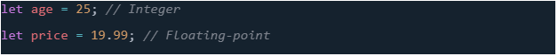رشته ها / Strings
رشته ها دنباله ای از کاراکترها هستند که برای متن استفاده می شوند. آنها را می توان در گیومه های تکی (')، گیومه های دوتایی (")، یا بک تیک ها (') برای حروف اللفظی الگو قرار داد.
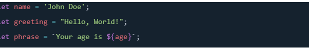بولین ها / Booleans
بولی ها مقادیر true/false هستند – آنها می توانند دو مقدار true یا false داشته باشند. اینها عموماً برای آزمایش یک شرط استفاده میشوند و پس از آن کد مطابق مناسب اجرا میشود.
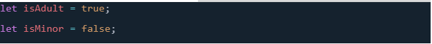آرایه ها / Arrays
آرایه یک شی منفرد
است که حاوی مقادیر
متعددی است که در کروشه های مربع محصور شده و با کاما از هم جدا شده اند.
آرایه ها برای ذخیره
چندین مقدار در یک متغیر استفاده می شوند.
آنها دارای شاخص صفر هستند، به این معنی که شاخص عنصر اول 0 است.
هنگامی که این آرایه ها تعریف شدند، می توانید به هر مقدار با توجه به موقعیت آنها در آرایه دسترسی داشته باشید.
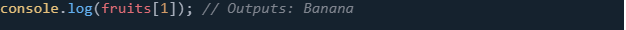اشیاء / Objects
در برنامه نویسی،
یک شی ساختاری از کد است که یک شی واقعی را مدل می کند. شما می توانید یک شی ساده داشته
باشید که نشان دهنده یک جعبه باشد و حاوی
اطلاعاتی در مورد عرض، طول و ارتفاع آن باشد،
یا می توانید یک شی داشته باشید که نشان دهنده یک شخص باشد و حاوی
اطلاعاتی در مورد
نام، قد، وزن، زبان و نحوه صحبت آنها باشد. برای سلام کردن به آنها و موارد دیگر.
اشیا مجموعهای
از ویژگیها هستند که هر ویژگی یک
جفت کلید-مقدار است. کلیدها همیشه رشته هستند و مقادیر می توانند هر نوع داده ای باشند.
جاوا اسکریپت انواع دیگری مانند null، undefined، Symbol و اشیاء پیچیده تری مانند Function، Date، RegExp و غیره دارد.
- null: عدم وجود عمدی هر مقدار شی را نشان می دهد.
- undefined: نشان می دهد که به یک متغیر مقداری اختصاص داده نشده است.
تایپ پویا / Dynamic Type
جاوا اسکریپت یک زبان با تایپ آزاد یا پویا است، به این معنی که نیازی نیست نوع متغیر را از قبل اعلام کنید. نوع یک متغیر می تواند با ادامه اجرا تغییر کند.
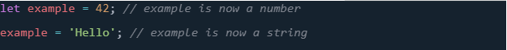
درک متغیرها و انواع داده ها در برنامه نویسی
جاوا اسکریپت اساسی است، زیرا آنها بلوک های
سازنده برای ذخیره و دستکاری داده ها هستند.
همانطور که پیشرفت می کنید، خواهید دید
که چگونه می توان از این نوع داده های ساده در توابع، حلقه ها و ساختارهای
دیگر برای ایجاد برنامه های کاربردی پیچیده و کاربردی استفاده کرد.
اعداد و عملگرهای حسابی
جاوا اسکریپت از طیف گسترده ای
از عملیات ریاضی پشتیبانی می کند و
آن را به ابزاری قدرتمند برای محاسبات عددی، از محاسبات پایه تا
محاسبات ریاضی پیچیده تر
تبدیل می کند.
درک نحوه کار با اعداد و
عملگرها برای دستکاری داده ها
و پیاده سازی منطق در برنامه های جاوا اسکریپت شما بسیار مهم است.
اعداد صحیح در مقابل اعداد ممیز شناور
در جاوا اسکریپت،
اعداد را می توان با
اعشار یا بدون اعشار نوشت. برخلاف برخی از زبان های برنامه نویسی دیگر، جاوا اسکریپت
بین انواع اعداد (مانند اعداد صحیح در مقابل اعداد ممیز شناور)
تفاوت قائل نمی شود.
همه اعداد در جاوا اسکریپت به صورت مقادیر ممیز شناور نمایش داده می شوند.
عملگرهای حسابی
جاوا اسکریپت شامل چندین عملگر برای انجام عملیات حسابی اساسی است:
- + جمع: دو عدد را اضافه می کند.
- - تفریق: عدد دوم را از عدد اول کم می کند.
- * ضرب: دو عدد را ضرب می کند.
- / تقسیم: عدد اول را بر عدد دوم تقسیم می کند.
- % مدول (باقی مانده): باقیمانده تقسیم عدد اول بر عدد دوم را برمی گرداند.
- ++ افزایش: یک را به عملوند خود اضافه می کند.
- -- کاهش: یک را از عملوند آن کم می کند.
مقایسه و عملگرهای منطقی
عملگرهای مقایسه برای مقایسه دو مقدار استفاده می شوند، در حالی که عملگرهای منطقی برای تعیین منطق بین متغیرها یا مقادیر استفاده می شوند.
- عملگرهای مقایسه: == (برابر)، != (مساوی نیست)، > (بزرگتر از)، < (کمتر از)، >= (بزرگتر یا مساوی)، <= (کمتر یا مساوی)، = == (به طور دقیق برابر)، !== (به شدت برابر نیست).
- عملگرهای منطقی: && (منطقی AND)، || (یا منطقی)، ! (منطقی نه).
مقادیر عددی ویژه
جاوا اسکریپت چندین مقدار عددی ویژه دارد:
- بی نهایت: بیانگر بی نهایت ریاضی است. هر عدد مثبت تقسیم بر صفر
- -بی نهایت: نشان دهنده بی نهایت منفی است. هر عدد منفی تقسیم بر صفر
- NaN: مخفف "Not-a-Number" است. نتیجه یک عملیات ریاضی نامعتبر یا تعریف نشده است.
اعداد و عملگرها پایه و اساس عملیات ریاضی در جاوا اسکریپت را تشکیل می دهند. با درک نحوه استفاده موثر از اینها، می توانید طیف گسترده ای
از
محاسبات ریاضی را برای حل مسائل، دستکاری داده ها و
پیاده سازی منطق پیچیده در برنامه های کاربردی وب خود انجام دهید. چه در حال محاسبه
امتیازات در یک بازی، پردازش تراکنش های مالی، یا به سادگی
شمارش کلیک ها باشید، تسلط بر اعداد و اپراتورها برای هر توسعه دهنده جاوا اسکریپت ضروری است.
مدیریت متن در جاوا اسکریپت
مدیریت متن در جاوا اسکریپت در درجه اول از طریق رشته ها انجام می شود که دنباله ای از کاراکترها هستند که برای نمایش متن استفاده می شوند.
رشتهها در
جاوا اسکریپت را میتوان با استفاده از نقلقولهای تکی (')،
گیومههای دوتایی (»)، یا بکتیکها (`) برای قالبهای تحت اللفظی قالب ایجاد کرد.
درک نحوه کار با رشتهها تقریباً برای هر برنامه جاوا اسکریپت،
از نمایش پیامها به کاربران، تا تجزیه داده های دریافتی از وب سرور
ایجاد رشته ها
شما می توانید رشته ها را با قرار دادن متن در داخل نقل قول ایجاد کنید. در اینجا چگونه است:
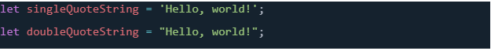هر دو روش به یک اندازه معتبر هستند. انتخاب بین نقل قول های تکی و دوگانه اغلب به ترجیحات سبک شخصی یا پروژه بستگی دارد.
الفاظ الگو - Template Literals
حروف الفبای
الگو با بک تیک (`) نشان داده می شوند، نه گیومه های تک سنتی (" ") یا
دو نقل قول (" "). در این بکتیکها، میتوانید
متن معمولی و عبارات تعبیهشده
را بنویسید که در پرانتزهای فرفری محصور شده و قبل از آن علامت دلار (${}) وجود دارد.
حروف الفبای الگو با بکتیک (`) تعریف می شوند و می توانند چندین خط را در بر گیرند. یکی از مزایای بزرگ قالب literals پشتیبانی از رشته های چند خطی بدون نیاز به درج صریح خطوط شکسته است:
الفبای الگوی تو در تو
الفاظ قالب همچنین می تواند تودرتو باشد، که می تواند هنگام ایجاد رشته های پیچیده مفید باشد:
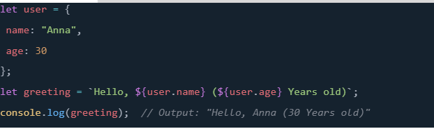برچسبگذاری شده با واژههای قالب / Tagged Template Literals
یک تابع گسترده از لفظ های قالب، به اصطلاح "الگوهای برچسب گذاری شده" هستند.
یک تابع برای پردازش خروجی
الگو قبل از نهایی کردن رشته استفاده می شود.
این می تواند برای محلی سازی، اقدامات امنیتی در برابر حملات XSS یا دستکاری های پیچیده رشته مفید
باشد.
رشته های رایج - String Methods
در جاوا، رشته ها اشیایی از کلاس String هستند که روش های مختلفی را برای دستکاری و برخورد با رشته ها
ارائه می دهند. این روش ها
به توسعه دهندگان اجازه می دهد
تا به راحتی کارهایی مانند جستجوی محتوا، مقایسه رشته ها،
تقسیم رشته ها به زیر رشته ها و بسیاری
از توابع دیگر را انجام دهند. در اینجا برخی از متدهای رایج کلاس String در جاوا آورده شده است:
Concatenation
Concatenation فرآیند اتصال دو یا چند رشته به یکدیگر است. این را می توان با استفاده از عملگر + یا متد ()concat انجام داد.
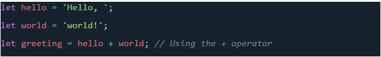 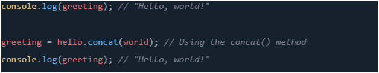length
ویژگی length تعداد کاراکترهای یک رشته را برمی گرداند.
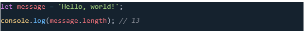دسترسی به کاراکترها - Characters
شما می توانید با استفاده از علامت گذاری براکت، مانند دسترسی به عناصر آرایه، به کاراکترهای جداگانه در یک رشته دسترسی داشته باشید. به یاد داشته باشید که شاخص های رشته ای مبتنی بر صفر هستند.
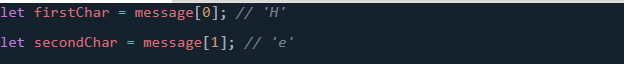جستجو در یک رشته - Searching Within a String
جاوا اسکریپت چندین روش برای جستجو در یک رشته فراهم می کند، مانند indexOf()، lastIndexOf() و include().
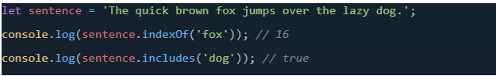استخراج زیر رشته ها - Extracting Substrings
برای استخراج بخش هایی از یک رشته، می توانید از متدهایی مانند slice()، substring() و substr() استفاده کنید.
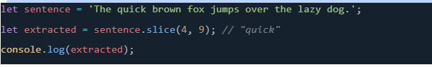جایگزینی محتوا - Replacing Content
متد ()replace وقوع یک زیر رشته در یک رشته را با یک زیررشته جدید جایگزین می کند.
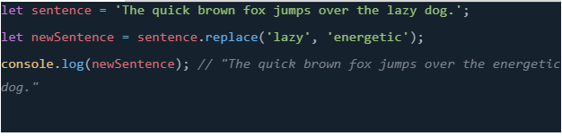تغییر حروف - Changing Case
برای تغییر حروف یک رشته، می توانید از ()toUpperCase و ()toLowerCase استفاده کنید.
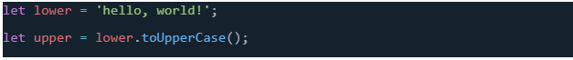 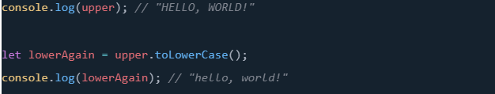
رشته ها بخش اساسی برنامه نویسی جاوا اسکریپت هستند که به شما
امکان می دهند متن را به روش های مختلف دستکاری کنید.
از ایجاد تبریک های ساده تا پردازش داده های پیچیده، درک نحوه کار موثر با رشته ها
به شما امکان می دهد برنامه های وب تعاملی و
کاربرپسندتری بسازید. با تسلط بر عملیات رشته، مجموعه وسیعی از امکانات
را برای دستکاری متن و ارائه داده ها در پروژه های جاوا اسکریپت خود باز می کنید.
شرح مفصل آرایه ها / Arrays در جاوا اسکریپت
آرایه ها یکی از جنبه های اساسی جاوا اسکریپت هستند که به توسعه
دهندگان اجازه می دهند چندین مقدار را در یک ساختار داده سازمان یافته ذخیره کنند.
آنها می توانند هر نوع مقداری، از رشته ها و اعداد
گرفته تا ساختارهای پیچیده تر مانند اشیاء یا حتی آرایه های دیگر را در خود نگه دارند.
بیایید عمیقتر
در آرایهها غوطهور شویم، پیچیدگیهای آنها را درک کنیم،
و یاد بگیریم چگونه آنها را به طور مؤثر دستکاری کنیم.
ایجاد و راه اندازی آرایه ها
آرایه ها با قرار دادن لیستی از عناصر جدا شده با کاما در داخل پرانتز ایجاد می شوند. این عناصر می توانند از هر نوع باشند، از جمله اعداد، رشته ها و یا حتی آرایه های دیگر (منجر به آرایه های چند بعدی):
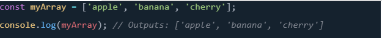دسترسی به آیتم های آرایه
به هر عنصر در یک آرایه یک شاخص متوالی اختصاص داده می شود که با 0 شروع می شود. این دستور اولین آیتم آرایه را که 'apple' است فچ می کند:
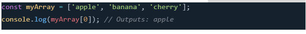اصلاح آیتم های آرایه
شما می توانید یک آیتم موجود در یک آرایه را با استفاده از فهرست آن تغییر دهید. برای به روز رسانی آرایه، مقدار جدیدی به آیتم در شاخص مشخص شده اختصاص دهید. در اینجا، مورد دوم را از "موز" به "blueberry" تغییر دادیم:
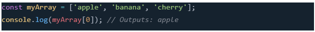دسترسی و اصلاح آیتم های آرایه
به هر عنصر در یک آرایه یک شاخص متوالی اختصاص داده می شود که با 0 شروع می شود. این دستور اولین آیتم آرایه را که 'apple' است فچ می کند:
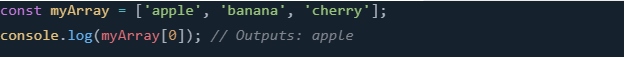آرایه های چند بعدی - Multidimensional Arrays
آرایهای که شامل آرایههای دیگری به عنوان عناصر خود است، به عنوان آرایه چند بعدی شناخته میشود. میتوانید با زنجیرهای کردن شاخصها با استفاده از علامتگذاری براکت، به موارد موجود در یک آرایه چند بعدی دسترسی داشته باشید. این به آیتم دوم (شاخص 1) در آیتم سوم (شاخص 2) MultiArray که عدد 1 است دسترسی پیدا می کند:
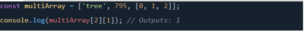
ویژگی ها و روش های آرایه / Array Properties and Methods
ویژگی length
ویژگی length یک آرایه تعداد عناصر موجود در آن را برمی گرداند.
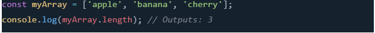افزودن و حذف موارد
Push and Pop: موارد را با push() به انتهای آرایه اضافه کنید و آخرین مورد را با pop(() حذف کنید.
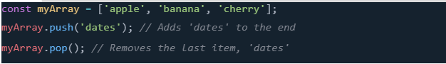Unshift و Shift: به طور مشابه، unshift () موارد را به ابتدا اضافه می کند و shift() اولین مورد را حذف می کند.
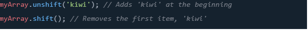یافتن آیتم ها و شاخص ها
indexOf(): شاخص اولین رخداد یک عنصر مشخص را پیدا می کند.
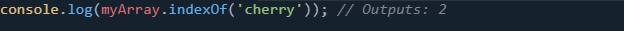include(): بررسی می کند که آیا یک آرایه حاوی مقدار خاصی است یا خیر.
آرایه ها در جاوا اسکریپت همه کاره و قدرتمند هستند و قادر به نگهداری ساختارهای داده پیچیده و ارائه طیف گسترده ای
از روش ها برای دستکاری آنها هستند. درک آرایه ها و تکنیک های دستکاری آن ها برای مدیریت موثر داده ها و
عملیات در جاوا اسکریپت بسیار مهم است. آرایهها چه برای ذخیرهسازی فهرست سادهای از نامها یا ساختاردهی دادههای
چند بعدی، انعطافپذیری و عملکرد مورد نیاز برای طیف وسیعی از سناریوهای برنامهنویسی را ارائه میدهند.
حلقه روی آرایه ها - Looping over Arrays
حلقه زدن روی آرایه ها جنبه اساسی کار با لیست های داده در جاوا اسکریپت است. حلقه ها به شما امکان می دهند یک
بلوک کد را به طور مکرر اجرا کنید و آنها را برای انجام عملیات روی هر آیتم در یک آرایه بسیار مفید می کند. بیایید
روش های مختلف برای حلقه زدن آرایه ها را با جزئیات بررسی کنیم.
حلقه for
حلقه for سنتی روشی همه کاره برای تکرار روی یک آرایه است. به تنظیم یک شمارنده اولیه، شرطی که باید برای ادامه
مثال:
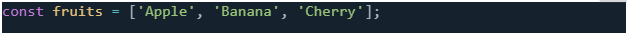 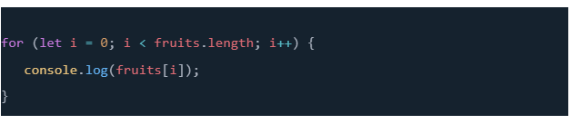در این مثال، i از 0 شروع می شود و تا زمانی که i کمتر از طول آرایه میوه ها باشد ، حلقه ادامه می یابد . پس از هر تکرار، i 1 افزایش می یابد.
حلقه برای... از - For…of
حلقه for...of که در ES6 معرفی شد، نحو سادهتری را برای تکرار روی اشیاء تکرارپذیر مانند آرایهها فراهم میکند.
این نیاز به دسترسی مستقیم به طول آرایه یا استفاده از یک شاخص برای دسترسی به آیتم های آرایه را از بین می برد.
مثال:
این حلقه روی هر میوه در آرایه میوهها تکرار میشود و مستقیماً مقدار هر آیتم را به متغیر میوه در هر تکرار اختصاص
میدهد.
متد forEach()
متد forEach() یک روش آرایه ای است که یک تابع ارائه شده را یک بار برای هر عنصر آرایه اجرا می کند. این
بخشی از نمونه اولیه Array است و رویکرد برنامه نویسی کاربردی تری را ارائه می دهد.
مثال:
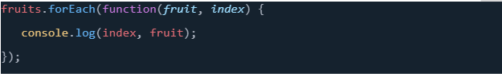
()forEach آیتم فعلی، شاخص آن و کل آرایه را در طول هر تکرار به تابع callback ارسال می کند. اگر به ایندکس یا
آرایه نیاز ندارید، می توانید این پارامترها را حذف کنید:
روش نقشه () - The map() Method
در حالی که به طور دقیق برای حلقه زدن به روش های بالا استفاده نمی شود، map() یک آرایه جدید با تبدیل هر عنصر
در آرایه اصلی به صورت جداگانه ایجاد می کند. اغلب زمانی استفاده می شود که می خواهید عملیات خاصی را برای هر
مورد اعمال کنید و از نتایج یک آرایه جدید ایجاد کنید.
مثال:
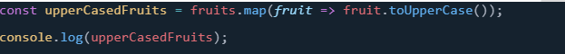این مثال نام هر میوه را به حروف بزرگ تبدیل می کند و نتایج را در یک آرایه جدید جمع آوری می کند.
نکاتی برای حلقه زدن آرایه ها
-
انتخاب حلقه مناسب: برای تکرار ساده، for...of و forEach () جایگزینهای مدرنتر و خواناتری برای حلقه
for سنتی هستند. زمانی که نیاز به تبدیل عناصر و ایجاد یک آرایه جدید دارید، از map() استفاده کنید. -
ملاحظات عملکرد: در حالی که forEach()، for...of، و map() نحو تمیزتری را ارائه می دهند، حلقه for
سنتی ممکن است در برخی سناریوها، به ویژه برای آرایه های بزرگ، مزایای عملکرد جزئی را ارائه دهد. با
این حال، برای بیشتر موارد استفاده، تفاوت ناچیز است. -
تکرار به عقب: اگر نیاز دارید از طریق یک آرایه به ترتیب معکوس حلقه بزنید، یک حلقه for سنتی که در آن
شمارنده را کاهش می دهید می تواند ساده تر باشد.
تکرار به عقب: اگر نیاز دارید از طریق یک آرایه به ترتیب معکوس حلقه بزنید، یک حلقه for سنتی که در آن
لیست را به طور موثر پردازش و دستکاری کنید. چه در حال جمعآوری امتیازات، ایجاد نشانهگذاری HTML از دادهها،
یا انجام محاسبات بر روی اقلام مجموعهای هستید، تسلط بر تکرار آرایه به طور قابل توجهی توانایی شما را برای کار با
دادههای پویا در برنامههایتان افزایش میدهد. برای یافتن بهترین مناسب برای سناریوها و ترجیحات خاص خود، این
روش های مختلف حلقه را آزمایش کنید.
تصمیم گیری: تسلط بر شرایط در جاوا اسکریپت
تصمیم گیری در کد شما: تسلط بر شرایط در جاوا اسکریپت
در برنامه نویسی، درست مانند زندگی واقعی، اغلب نیاز به تصمیم گیری داریم. این تصمیمات بر اساس شرایط مختلف، با
تقلید از فرآیند تصمیم گیری منطقی، جریان اجرا را تعیین می کنند. جاوا اسکریپت راه های مختلفی برای انجام بررسی
های شرطی و اجرای کد بر اساس آن ارائه می دهد و برنامه های شما را قادر می سازد به صورت پویا به ورودی ها یا
موقعیت های مختلف پاسخ دهند. در این فصل، ما عمیقاً به عبارات شرطی در جاوا اسکریپت می پردازیم، نحو، استفاده و
بهترین شیوه ها را از طریق مثال های دنیای واقعی بررسی می کنیم.
درک عبارات مشروط
عبارات شرطی به شما امکان می دهد تا قطعات خاصی از کد را بر اساس شرایط خاص اجرا کنید. اینها ستون فقرات
تصمیم گیری در برنامه نویسی هستند و به کد شما اجازه می دهند به مسیرهای مختلف منشعب شوند و اقداماتی را بر
اساس داده های ورودی انجام دهند.
بیانیه if
مثال: فرض کنید میخواهیم بررسی کنیم که آیا سن یک کاربر به اندازه کافی برای دسترسی به بخش خاصی از وبسایت
کافی است یا خیر. 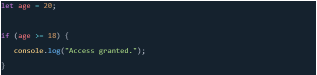
بیانیه دیگر- else
اغلب، اگر شرط درست نباشد، می خواهید یک عمل جایگزین انجام دهید. اینجاست که عبارت else وارد می شود.
مثال: درپی مثال قبلی برای رسیدگی به کاربران زیر سن قانونی:
بیانیه else if
برای چند شرط، اگر شرط اول نادرست است، از else if استفاده کنید تا یک شرط جدید را مشخص کنید.
مثال: اضافه کردن یک شرط تخفیف بر اساس سن:
Nested if Statements
میتوانید برای بررسی چند شرط، دستورهای if را درون یکدیگر قرار دهید.
مثال: بررسی شرایط چندگانه برای دسترسی یک رویداد خاص:
اپراتورهای مقایسه - Comparison Operators
عملگرهای مقایسه (==، !=، ===، !==، >، <، >=، <=) در شرایط شرطی برای مقایسه مقادیر استفاده می شوند.
== برابری را بررسی می کند.
=== برابری دقیق (مقدار و نوع) را بررسی می کند.
!= و !== به ترتیب نابرابری و نابرابری شدید را بررسی کنید.
>، <، >=، <= مقادیر عددی را مقایسه کنید.
عملگرهای منطقی - Logical Operators
عملگرهای منطقی (&&، ||، !) اجازه ترکیب چند شرط را می دهند.
&& (AND) درست بودن هر دو شرط را بررسی می کند.
|| (OR) بررسی می کند که آیا حداقل یک شرط درست است یا خیر.
! (NOT) یک شرط را نفی می کند.
مثال: بررسی شرایط متعدد برای ارتقاء:
اپراتور سه گانه - The Ternary Operator
عملگر سه گانه مخفف عبارات if-else است که برای شرطی های ساده استفاده می شود.
مثال: اعطای تخفیف بر اساس سن:
بیانیه سوئیچ - The switch Statement
دستور switch برای بررسی های چندگانه در برابر یک مقدار واحد استفاده می شود. این جایگزینی برای چندین شرط
if-else است.
مثال: تخصیص نقش ها بر اساس نوع کاربر:
عبارات شرطی برای ایجاد برنامه های کاربردی وب پویا و تعاملی ضروری هستند. با درک نحوه استفاده از if، else
if، else، شرط های تودرتو، عملگر سه تایی و دستور switch، می توانید جریان برنامه های جاوا اسکریپت خود را به
طور موثر کنترل کنید. این ابزارها به شما امکان میدهند در کد خود تصمیم بگیرید و به برنامههای منطقیتر، کارآمدتر و
پاسخگوتر کاربر منجر شود. استفاده از این شرطی ها را با سناریوهای مختلف تمرین کنید تا قدرت و انعطاف پذیری آنها
را به طور کامل درک کنید.
بیایید مثالهای ارائهشده در بحث در مورد عبارات شرطی در جاوا اسکریپت را با ترکیب HTML و CSS برای ایجاد
یک سناریوی کاملتر گسترش دهیم. این به نشان دادن نحوه کار جاوا اسکریپت، HTML و CSS برای ساخت صفحات
وب تعاملی کمک می کند.
سناریو: تأیید سن برای دسترسی به وب سایت
وب سایتی را تصور کنید که برای دسترسی به محتوای خاصی نیاز به تأیید سن دارد. ما از یک فرم ساده HTML برای
بدست آوردن سن کاربر استفاده می کنیم و سپس برای تعیین سطح دسترسی از شرطی های جاوا اسکریپت استفاده می
کنیم. علاوه بر این، ما از CSS برای یک ظاهر طراحی اولیه استفاده خواهیم کرد.
HTML
ابتدا، اجازه دهید یک فرم HTML ایجاد کنیم که در آن کاربران می توانند سن خود را وارد کنند، و یک مکان نگهدار که
در آن پیام نمایش داده می شود.

CSS (style.css)
حالا، بیایید یک استایل اولیه اضافه کنیم تا فرم کمی زیباتر به نظر برسد.
جاوا اسکریپت (script.js)
در نهایت، بیایید منطق را با جاوا اسکریپت پیاده سازی کنیم. ما از عبارت if-else برای تعیین سطح دسترسی بر اساس
سن وارد شده توسط کاربر استفاده خواهیم کرد.
توضیح
-
HTML: ساختار شامل یک فرم برای ورودی سن و یک div برای نمایش پیام ها است. با کلیک روی دکمه،
تابع verifyAge تعریف شده در فایل جاوا اسکریپت را فراخوانی می کند. -
CSS: سبکهایی اضافه میشوند تا ظاهر فرم و صفحه به طور کلی بهبود یابد. این شامل یک ظاهر طراحی
شده برای بدنه، فرم، جعبه ورودی، دکمه و div پیام است. -
جاوا اسکریپت: این اسکریپت سن وارد شده توسط کاربر را می گیرد و از منطق شرطی برای تعیین پیام برای
نمایش استفاده می کند. سپس پیام در div با پیام شناسه نمایش داده می شود.
با ادغام HTML، CSS و جاوا اسکریپت، ما یک سیستم تأیید سن ساده و در عین حال تعاملی ایجاد کرده ایم. کاربران
می توانند سن خود را وارد کنند و بسته به مقدار، پیام مربوطه در مورد سطح دسترسی آنها نمایش داده می شود. این مثال
قدرت جاوا اسکریپت را برای افزودن تعامل به صفحات وب، نشان دادن اصول دستکاری DOM و منطق شرطی نشان
می دهد.
قدرت حلقه ها / Loops در جاوا اسکریپت
حلقه ها سنگ بنای برنامه نویسی هستند که ما را قادر می سازند کارهای تکراری را سریع و موثر انجام دهیم. در جاوا
اسکریپت، حلقه ها نقش مهمی در دستکاری داده ها، خودکارسازی وظایف و افزایش تعامل برنامه های کاربردی وب
دارند. این فصل به ساختارهای حلقهای مختلف موجود در جاوا اسکریپت میپردازد و اهمیت آنها را از طریق سناریوها و
مثالهای عملی نشان میدهد.
چرا حلقه ها اهمیت دارند
حلقه ها در برنامه نویسی برای خودکارسازی کارهای تکراری ضروری هستند. چه در حال پردازش مجموعهای از
دادهها، تولید عناصر UI پویا یا پیادهسازی منطق بازی باشید، حلقهها یک رویکرد ساده برای اجرای چندین بار یک بلوک
کد ارائه میدهند. این نه تنها در زمان صرفه جویی می کند، بلکه افزونگی کد را نیز به حداقل می رساند و اسکریپت های
شما را خواناتر و قابل نگهداری تر می کند. بدون حلقهها، انجام چندین بار یک عمل یکسان مستلزم نوشتن کد آن عمل در
هر بار اجرای آن است که باعث طولانیتر شدن کد، نگهداری سختتر و مستعد خطا میشود.
مثال: نمایش فهرستی از نام ها
تصور کنید لیستی از اسامی دارید که می خواهید در یک صفحه وب نمایش دهید. با یک حلقه، می توانید به راحتی در
لیست تکرار کنید و هر نام را تنها با چند خط کد نمایش دهید. بیایید ببینیم این سناریو با و بدون استفاده از یک حلقه چگونه
به نظر می رسد.
با یک حلقه
در این مثال، صرف نظر از تعداد نامها در آرایه، حلقه for به طور موثر نمایش همه آنها را با یک بلوک مختصر از کد
کنترل میکند.
بدون حلقه
بدون استفاده از حلقه، باید به صورت دستی یک عبارت برای نمایش هر نام بنویسید. برای همان لیست اسامی، کد چیزی
شبیه به این خواهد بود:
این رویکرد نه تنها ناکارآمد است بلکه مقیاس پذیر نیز نیست. اگر لیست به صدها یا هزاران نام افزایش یابد، نوشتن دستی
یک عبارت console.log برای هر یک غیر عملی است. علاوه بر این، افزودن یا حذف نامها از لیست نیاز به تغییر کد
برای تنظیم تعداد عبارات دارد و خطر خطا را افزایش میدهد.
تاثیر حلقه ها
مقایسه به وضوح نشان می دهد که چرا حلقه ها در برنامه نویسی بسیار مهم هستند:
-
کارایی: حلقهها وظایف تکراری را خودکار میکنند و مقدار کد مورد نیاز برای نوشتن را به میزان قابل توجهی
کاهش میدهند. -
قابلیت نگهداری: با حلقه ها، افزودن یا حذف موارد از یک لیست نیازی به تغییر در خود حلقه ندارد و حفظ کد
را آسان تر می کند. -
مقیاس پذیری: حلقه ها می توانند هر تعداد آیتم را مدیریت کنند، و کد شما را مقیاس پذیرتر و سازگارتر با اندازه
های مختلف داده می کند.
به طور خلاصه، حلقه ها یک ابزار اساسی در جعبه ابزار برنامه نویس هستند که کدهای کارآمدتر، خوانا و قابل نگهداری
را امکان پذیر می کنند. بدون حلقه، مدیریت وظایف تکراری دشوار و مستعد خطا خواهد بود، به ویژه با افزایش پیچیدگی
و اندازه داده ها. جاوا اسکریپت انواع مختلفی از حلقه ها را ارائه می دهد که هر کدام برای سناریوهای مختلف مناسب
هستند. بیایید این ساختارهای حلقهای را با مثالهای واقعی بررسی کنیم:
حلقه for
حلقه for همه کاره ترین ساختار حلقه در جاوا اسکریپت است. این برای موقعیت هایی ایده آل است که از قبل می دانید
چند بار باید یک بلوک کد را اجرا کنید.
مثال: ایجاد لیستی از اعداد زوج تا حد معین.
حلقه while
حلقه while زمانی مناسب است که تعداد تکرارها قبل از شروع حلقه مشخص نباشد. تا زمانی که شرایط آن به درستی
ارزیابی شود، ادامه می یابد.
مثال: یافتن فاکتوریل یک عدد.
حلقه do...while
حلقه do...while مشابه حلقه while است، اما تضمین می کند که بلوک کد حداقل یک بار اجرا شود.
مثال: اعتبار سنجی ورودی کاربر.
حلقه for...of
حلقه for...of یک نحو ساده برای تکرار بر روی اشیاء تکرارپذیر مانند آرایه ها و رشته ها فراهم می کند.
مثال: تکرار روی آرایه ای از نام ها.
حلقه for...in
اگرچه منحصراً برای آرایه ها نیست، حلقه for...in برای تکرار روی کلیدهای یک شی استفاده می شود.
مثال: چاپ خواص شی.
استفاده بهینه از حلقه ها
ترکیب حلقه ها با دستورات شرطی
حلقه ها اغلب دست در دست هم با دستورات شرطی کار می کنند تا عملیات پیچیده تری را بر اساس شرایط خاص انجام
دهند.
مثال: فیلتر کردن اعداد زوج از یک آرایه.
بیانیه های کنترل حلقه Loop Control Statements
break: حلقه را خاتمه می دهد.
continue: بقیه تکرار حلقه را رد می کند و با مورد بعدی ادامه می دهد.
مثال: بیرون آمدن از یک حلقه زمانی که یک شرط برآورده شود.
حلقه ها یک جنبه اساسی جاوا اسکریپت هستند که به توسعه دهندگان امکان می دهد کدهای کارآمد، مختصر و خوانا
بنویسند. با درک انواع مختلف حلقه ها و موارد استفاده مناسب از آنها، می توانید از پتانسیل کامل آنها برای بهبود برنامه
های کاربردی وب خود استفاده کنید. به یاد داشته باشید، بهترین راه برای تسلط بر حلقه ها تمرین است، بنابراین با این
مثال ها آزمایش کنید و سناریوهای خود را ایجاد کنید تا ببینید با حلقه ها در جاوا اسکریپت به چه چیزی می توانید برسید.
مثال حلقهها
بیایید مثال نمایش لیستی از نامها با حلقهها را با ادغام HTML و CSS تقویت کنیم تا نه تنها نشان دهیم که حلقهها چگونه
در جاوا اسکریپت کار میکنند، بلکه چگونه در یک صفحه وب کامل ادغام میشوند. این نشان می دهد که چگونه
HTML، CSS و جاوا اسکریپت می توانند برای نمایش پویا محتوا با هم کار کنند.
HTML
ابتدا یک ساختار ساده HTML راه اندازی می کنیم. ما یک لیست نامرتب (
- ) خواهیم داشت که در آن آیتم های لیست
- ) را به صورت برنامه نویسی برای هر نام درج می کنیم.
CSS (styles.css)
در مرحله بعد، چند سبک اساسی را اضافه کنید تا لیست از نظر بصری جذاب شود.
جاوا اسکریپت (script.js)
در نهایت، اجازه دهید از جاوا اسکریپت برای درج پویا هر نام در لیست با استفاده از یک حلقه استفاده کنیم. آرایه نامها را از قبل و برای هر نام میگیریم، یک عنصر
- جدید ایجاد میکنیم،
محتوای متن آن را روی نام فعلی تنظیم میکنیم و آن را به
- اضافه میکنیم.
- HTML: ساختار صفحه را تنظیم می کند، از جمله یک عنوان و یک لیست خالی نامرتب که در آن نام ها به صورت پویا درج می شوند.
- CSS: یک ظاهر طراحی برای صفحه و موارد فهرست، از جمله چیدمان اولیه و زیباییشناسی مانند رنگ پسزمینه، بالشتکها، حاشیهها و سایه جعبه برای ظاهر بصری دلپذیر ارائه میکند.
- جاوا اسکریپت: منتظر می ماند تا DOM به طور کامل بارگیری شود (رویداد DOMContentLoaded) قبل از اجرای اسکریپت برای اطمینان از در دسترس بودن عناصری مانند لیست نامرتب. سپس از یک حلقه for برای تکرار در میان آرایه نام ها استفاده می کند، یک آیتم لیست جدید برای هر نام ایجاد می کند و آن را به لیست نامرتب در HTML اضافه می کند. این نشان می دهد که چگونه حلقه ها در جاوا اسکریپت می توانند برای تولید و نمایش پویا محتوا در یک صفحه وب بر اساس داده ها استفاده شوند.
- functionName نام تابع است.
- پارامترها / parameters نام ورودی هایی هستند که تابع می پذیرد و با کاما از هم جدا شده اند.
- بلوک کد داخل پرانتزهای فرفری {} هنگام فراخوانی تابع اجرا می شود.
- نام رویداد برای گوش دادن، که در این مورد keydown است
- یک تابع برای اجرا در هنگام وقوع رویداد / event.
توضیح
در این مثال یکپارچه، ما قدرت استفاده از حلقه ها در جاوا اسکریپت برای تعامل با DOM را می بینیم که امکان تولید محتوای پویا را فراهم می کند. این رویکرد در توسعه وب اساسی است، جایی که محتوای صفحات وب اغلب باید بر اساس داده های سرور، ورودی کاربر یا منابع دیگر تولید یا به روز شود.
استفاده از قدرت توابع / Functions در جاوا اسکریپت
توابع بلوک های سازنده کدهای قابل خواندن، قابل نگهداری و قابل استفاده مجدد در جاوا اسکریپت هستند. آنها دنباله ای از عبارات را برای انجام یک کار خاص در یک واحد واحد کپسوله می کنند که می تواند از قسمت های مختلف یک برنامه به تعداد دفعات مورد نیاز فراخوانی شود. این فصل شما را از طریق مفاهیم اساسی توابع در جاوا اسکریپت راهنمایی می کند و اهمیت آنها را با مثال های عملی نشان می دهد.
مقدمه ای بر توابع
یک تابع / Funktion در جاوا اسکریپت مجموعه ای از دستورات است که یک کار را انجام می دهد یا یک مقدار را محاسبه می کند. با تعریف یک تابع، میتوانید یک قطعه از برنامه را در یک مقدار «پیچید» کنید و به شما این امکان را میدهد که آن را هر کجا که به آن عملکرد خاص نیاز دارید، بدون نیاز به نوشتن دوباره کد، فراخوانی کنید.
تعریف توابع
روش های مختلفی برای تعریف یک تابع در جاوا اسکریپت وجود دارد،
اما متداول ترین روش، اعلان تابع است که به عنوان دستور تابع نیز شناخته می شود. Syntaxمثال
فراخوانی توابع
پس از تعریف یک تابع، می توانید آن را با نام آن و به دنبال پرانتز فراخوانی کنید.
مثال
پارامترهای تابع و آرگومان ها
پارامترها متغیرهایی هستند که به عنوان مکان نگهدار برای مقادیر ارسال شده به تابع عمل می کنند. مقادیر واقعی ارائه شده هنگام فراخوانی یک تابع به عنوان آرگومان شناخته می شوند.
مثال
محدوده عملکرد - Function Scope
محدوده دسترسی متغیرها را تعیین می کند. متغیرهای تعریف شده در داخل یک تابع را نمی توان از خارج از تابع در دسترس قرار داد، زیرا تابع یک محدوده محلی برای متغیرهای خود ایجاد می کند.
مثال
با غواصی در قلمرو توابع جاوا اسکریپت، با یک مفهوم محوری مواجه می شویم: محدوده. این مفهوم فقط یک جزئیات فنی نیست. نقش مهمی در ساختار و امنیت کد ما دارد. اساساً scope قابلیت مشاهده و دسترسی متغیرها و توابع را در بخشهای مختلف کد ما تعریف میکند.
محدوده عملکرد داخل
هنگامی که یک متغیر یا یک تابع را در یک تابع دیگر اعلام می کنید، آن را در یک فضای بسته و مجزا قرار می دهید که به عنوان محدوده تابع شناخته می شود. به این فکر کنید که یک اتاق خصوصی در کد خود ایجاد می کنید که در آن هر چیزی که در داخل آن اعلام شده فقط در آن اتاق قابل دسترسی است.
این انزوا خودسرانه نیست. اهداف مهمی مانند به حداقل رساندن خطر تداخل نامگذاری و محافظت در برابر دستکاری ناخواسته سایر اسکریپتها یا بخشهایی از کد انجام میشود.دامنه جهانی
خارج از همه عملکردها، دامنه جهانی قرار دارد. متغیرها و توابع اعلام شده در اینجا از هر بخشی از کد قابل دسترسی هستند. اگرچه این ممکن است راحت به نظر برسد، اما یک شمشیر دو لبه است. متغیرهای جهانی را می توان از هر جایی تغییر داد، که به طور بالقوه منجر به رفتار غیرقابل پیش بینی و ردیابی اشکالات سخت می شود.
پیمایش درگیری ها و نگرانی های امنیتی
بیایید یک سناریوی گویا را در نظر بگیریم. تصور کنید در حال ادغام دو فایل جاوا اسکریپت مجزا در سند HTML خود هستید و هر دو فایل یک تابع و یک متغیر را با نامهای یکسان اعلام میکنند:
جاوا اسکریپت
ممکن است قصد فراخوانی تابع greeting() تعریف شده در هر دو اسکریپت باشد، اما مدیریت جاوا اسکریپت با دامنه جهانی به این معنی است که فقط اولین مورد قابل دسترسی است و باعث می شود دومی نادیده گرفته شود. بعلاوه، تلاش برای تخصیص مجدد متغیر نام در second.js به دلیل اعلام const در first.js خطایی ایجاد می کند. این نشان میدهد که چگونه متغیرها و توابع جهانی میتوانند منجر به درگیری و عوارض جانبی ناخواسته شوند، بهویژه هنگام ادغام چند اسکریپت.
قیاس باغ وحش: تصویری در محدوده
تصور کنید ساختار کد ما را با یک باغ وحش مقایسه کنید که در آن هر گونه حیوانی (شیر، گورخر، ببر، پنگوئن) در محوطه خود زندگی می کند. هر محفظه ای شبیه به یک محدوده عملکردی است: حاوی همه چیزهایی است که حیوانات به آن نیاز دارند، اما آنها نمی توانند به چیزهای خارج از فضای خود دسترسی داشته باشند یا با آنها تداخل داشته باشند. نگهبان باغ وحش، با دسترسی به تمام محوطه ها، مانند محدوده جهانی در کد ما است. این تنظیمات از هرج و مرج جلوگیری می کند. همانطور که حیواناتی که آزادانه رومینگ میکنند و وارد محوطههای دیگر میشوند منجر به مشکل میشوند، متغیرها و عملکردهایی که از محدوده آنها فرار میکنند میتوانند کد ما را ویران کنند.
Best Practices
برای کاهش خطرات مرتبط با گستره جهانی و اطمینان از سازماندهی و ایمن ماندن کد ما، بهترین روشها کپسوله کردن کد در توابع را توصیه میکنند. این رویکرد نه تنها از تضاد بین اسکریپت ها جلوگیری می کند، بلکه قابلیت نگهداری و خوانایی کد ما را نیز افزایش می دهد. با سازماندهی مدبرانه کد خود و رعایت مرزهای محدوده، میتوانیم برنامههای کاربردی قوی و کارآمد و عاری از خطرات تعاملات ناخواسته جهانی بسازیم.
توابع ناشناس و عبارات تابع - Anonymous Functions and Function Expressions
یک عبارت تابع شبیه به و دارای همان نحوی / syntax است که اعلان / declaration تابع است با این تفاوت که نام تابع را می توان حذف کرد و یک تابع ناشناس ایجاد کرد. عبارات تابع را می توان در متغیرها ذخیره کرد، به عنوان آرگومان به توابع دیگر ارسال کرد و موارد دیگر.
مثال
تا اینجا ما فقط یک تابع مانند این ایجاد کرده ایم:
اما شما همچنین می توانید تابعی ایجاد کنید که نامی نداشته باشد:
این تابع ناشناس / Anonymous نامیده می شود، زیرا نامی ندارد. هنگامی که یک تابع انتظار دارد تابع دیگری را به عنوان پارامتر دریافت کند، اغلب توابع ناشناس را مشاهده خواهید کرد. در این حالت، پارامتر تابع اغلب به عنوان یک تابع ناشناس ارسال می شود. توجه: این شکل از ایجاد یک تابع به عنوان عبارت تابع نیز شناخته می شود. برخلاف اعلان های تابع، عبارات تابع بالا نمی روند. به عنوان مثال، فرض کنید زمانی که کاربر در یک کادر متنی تایپ می کند، می خواهید کدی را اجرا کنید. برای این کار می توانید تابع addEventListener() کادر متن را فراخوانی کنید. این تابع از شما انتظار دارد که آن را (حداقل) دو پارامتر ارسال کنید:
هنگامی که کاربر کلیدی را فشار میدهد، مرورگر تابعی را که ارائه کردهاید فراخوانی میکند و پارامتری حاوی اطلاعات مربوط به این رویداد، از جمله کلید خاصی که کاربر فشار داده است، به آن ارسال میکند:
به جای تعریف یک تابع logKey() جداگانه، می توانید یک تابع ناشناس را به addEventListener():
توابع پیکان - Arrow Functions
ES6 توابع فلش را معرفی کرد، روشی مختصر برای نوشتن توابع در جاوا اسکریپت. توابع پیکان مخصوصاً برای توابع درون خطی و فراخوانی مفید هستند.
(
Root
…
Cities Overview
…
City Detail
…
City Config
…
City Spots Overview
…
Cities Spot Details
…
City Icons Overview
…
City Icon Detail
.....
Links
…
Expanders
…..
Filters
…